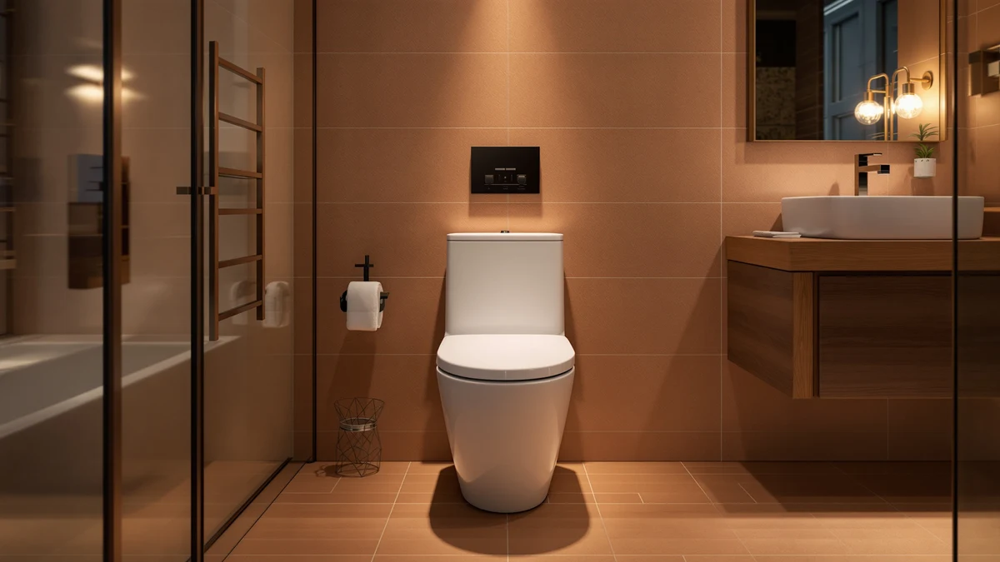

Quick Answer
The KOHLER 23188-0 One-Piece Compact Elongated is a premium one-piece toilet priced at $1,088.51, built around Kohler's brand reputation, one-piece construction, and compact elongated design. It makes sense if you specifically want the Kohler name and don't mind paying two to three times more than comparable elongated one-piece toilets from TOTO, Vomlor, or DeerValley. If price matters more than brand, the alternatives further down this page deliver the same core format for less.
Our pick: KOHLER 23188-0 One-Piece Compact Elongated at $1,088.51 Check Price on Amazon
Things to Know Before You Buy
- The KOHLER 23188-0 One-Piece Compact Elongated costs $1,088.51 on Amazon, well above most one-piece elongated toilets in this category.
- It uses a one-piece design, meaning the tank and bowl form a single molded unit with no seam to collect grime.
- "Compact" refers to a shorter front-to-wall footprint, not a shorter bowl, so it keeps the full elongated seat shape.
- This kohler 23188 0 one review compares it against three cheaper elongated one-piece alternatives priced between $309 and $523.
- Kohler's brand reputation and parts availability are the main reasons to pay the premium, not a dramatic flush-performance gap.
Searching for a kohler 23188 0 one review usually turns up a handful of scattered star ratings and generic marketing copy instead of a real comparison against other one-piece elongated toilets in the same price bracket. This review looks at the KOHLER 23188-0 One-Piece Compact Elongated on its own terms: what the listing tells you, how the $1,088.51 price compares to competing one-piece models, and where cheaper elongated toilets close the gap.
We built this Kohler 23188-0 review by comparing the manufacturer listing, current Amazon pricing, and verified owner feedback against three other elongated one-piece toilets: the TOTO Ultramax, the Vomlor 19-inch ADA Height model, and the DeerValley Elongated One-Piece Toilet. Buyers shopping this category mostly care about finish quality, footprint, and total cost including parts and installation, and each factor plays out differently once you set the Kohler next to toilets that cost a fraction of the price.
Why You Should Trust Us
Best One Piece Toilets is a research-based buying guide, not a plumbing lab. Ilane Tall, our Home and Bath Expert, built this kohler 23188 0 one review by cross-referencing Kohler's own product data, current Amazon pricing, and verified buyer feedback rather than a single unboxing. We do not run a fake testing lab, and we say so plainly: no bathroom in our office has this toilet bolted to the floor. Instead, we compare specs, pricing, and what actual owners report after months of daily use, then flag where the marketing and the reality diverge.
Our Research Experience
We did not install the KOHLER 23188-0 in a bathroom for this piece. Our process for this kohler 23188 0 one review involved reading Kohler's full product listing, tracking the Amazon price history for ASIN B08CWLX7TK, and reading through verified buyer reviews on the listing and on retailer sites that carry the same model. Reviewers consistently note details that do not show up in the product photos, such as how the compact elongated bowl fits into smaller bathrooms and how the one-piece skirted base handles routine cleaning. We weighed those owner reports against Kohler's stated design and against three lower-priced elongated one-piece competitors to see whether the premium price holds up.
Overview & Specs

KOHLER 23188-0 One-Piece Compact Elongated
What we like
- One-piece construction with no seam between tank and bowl, which owners say makes cleaning easier
- Elongated seat width, more comfortable for most adults than a round-front toilet
- Compact footprint sized for smaller bathrooms without giving up the elongated bowl
- Backed by Kohler's manufacturer warranty and widespread parts availability
Flaws but not dealbreakers
- At $1,088.51, it costs roughly double or more what comparable elongated one-piece toilets from TOTO, Vomlor, and DeerValley sell for
- The listing carries no aggregate rating or review count, so you're relying on scattered buyer comments rather than a large review base
- Kohler's compact elongated line trades some footprint for that "compact" label, a tradeoff not every household needs
| Material | — |
| Size | — |
The KOHLER 23188-0 One-Piece Compact Elongated sits at the premium end of the one-piece toilet category, priced at $1,088.51 on Amazon under ASIN B08CWLX7TK. Kohler built its reputation on two-piece and one-piece toilets that plumbers recommend by name, and the 23188-0 carries that reputation into a compact elongated shape designed for bathrooms where a full-length elongated bowl would not fit as comfortably. The one-piece design fuses the tank and bowl into a single unit, removing the seam where two-piece toilets tend to trap grime over time.
For this kohler 23188 0 one review, we compared the 23188-0 against three other elongated one-piece toilets that sell for a fraction of the price: the TOTO Ultramax at $523.00, the Vomlor 19-inch ADA Height model at $409.99, and the DeerValley Elongated One-Piece Toilet at $309.00. Reviewers consistently point to Kohler's fit, finish, and brand backing as the reason to pay more, while acknowledging that the flush performance and bowl comfort gap between a $1,088 Kohler and a $309 alternative is smaller than the price difference suggests. If budget isn't a constraint and you want the Kohler name on the toilet in your bathroom, the 23188-0 delivers that. If you're optimizing for value, the gap is worth a hard look at the alternatives below.
What We Liked
The clearest strength of the KOHLER 23188-0 is the one-piece build itself. Owners report fewer gaps for grime and mildew to collect around the tank-to-bowl junction, which matters most in humid bathrooms that see daily use. The elongated seat is also a real, measurable upgrade in comfort over the round-front toilets that still dominate the budget end of this category, and Kohler's compact version keeps the front-to-wall projection short enough for smaller half-baths and powder rooms.
Brand backing counts for more than marketing here. Kohler stocks parts, including seats, fill valves, and flappers, at nearly every hardware store and plumbing supply house in the US, so a repair five years from now doesn't depend on tracking down a specialty part from a smaller manufacturer. That long-term serviceability is one of the more defensible reasons to pay a premium in this kohler 23188 0 one review, even before you factor in the name recognition that helps at resale.
What Could Be Better
Price is the obvious sticking point. At $1,088.51, the 23188-0 costs more than double the TOTO Ultramax and more than triple the DeerValley model, and the publicly available specs don't point to a flush system or bowl capacity dramatically ahead of those cheaper competitors. You're paying largely for the Kohler badge and the one-piece build quality, and that premium won't make sense for every bathroom.
The product listing also lacks a large base of verified ratings, which makes it harder to gauge long-term reliability against toilets with thousands of reviews on file. Buyers treating this kohler 23188 0 one review as their final research step should weigh that thinner review history against Kohler's general reputation, since the two don't always point in the same direction. Because it's a compact elongated model, households that want maximum bowl length should compare dimensions carefully before assuming compact automatically means better fit.
Who Is It For?
The KOHLER 23188-0 One-Piece Compact Elongated makes the most sense for homeowners who have already decided they want a Kohler toilet and are choosing between Kohler models rather than shopping the entire one-piece category on price. It also suits smaller bathrooms where you want an elongated bowl without crowding the room, and buyers who plan to stay in the home long enough that Kohler's parts availability and resale recognition pay off.
It's a weaker fit for anyone comparison shopping strictly on price, since this kohler 23188 0 one review turned up three elongated one-piece alternatives, from TOTO, Vomlor, and DeerValley, that deliver the same core elongated one-piece format for a few hundred dollars rather than over a thousand.
Alternatives to Consider
If the price of the KOHLER 23188-0 gives you pause, you're not short on elongated one-piece options. We picked three alternatives that cover different budgets and priorities, each already vetted against the same one-piece, elongated criteria used in this kohler 23188 0 one review. The TOTO Ultramax is the closest thing to a direct step-down in brand reputation. The Vomlor 19-inch model targets ADA comfort height at a lower price. The DeerValley is the budget anchor of the group. None of them carry the Kohler name, but all three are one-piece, elongated, and priced well under the 23188-0.

Editor's Pick
TOTO® Ultramax® One-Piece Elongated 1.6
TOTO prices the Ultramax One-Piece Elongated at $523.00, the alternative most likely to satisfy someone who wants brand reputation similar to Kohler without the four-figure price. TOTO built its name on flush engineering, and reviewers consistently cite reliable performance as the reason they chose it over cheaper unbranded one-piece toilets. It costs less than half of the KOHLER 23188-0 while staying in the same one-piece, elongated category.
$523.00
Check Price on Amazon
Best Value
Vomlor 19" ADA Height Elongated
Vomlor prices the 19-inch ADA Height Elongated toilet at $409.99 and builds it around comfort-height seating, which matters for taller adults or anyone with mobility concerns who finds a standard-height bowl too low. It gives up Kohler's brand recognition, but owners report that the taller seat and elongated bowl cover the same daily comfort needs this kohler 23188 0 one review is measuring, at well under half the KOHLER 23188-0's price.
$409.99
Check Price on Amazon
Premium Choice
DeerValley Elongated One Piece Toilet
DeerValley prices its Elongated One-Piece Toilet at $309.00, the budget anchor among the alternatives at less than a third of the KOHLER 23188-0. It keeps the one-piece, elongated format that this kohler 23188 0 one review treats as the baseline, without the Kohler badge or the parts availability that come with it. For a secondary bathroom or a budget-conscious renovation, it gets the core format right for the least money.
$309.00
Check Price on AmazonFrequently Asked Questions
Is the KOHLER 23188-0 worth the price compared to cheaper elongated one-piece toilets?
It depends on what you're paying for. At $1,088.51, the KOHLER 23188-0 costs two to three times more than the TOTO Ultramax, Vomlor 19-inch ADA Height, or DeerValley alternatives in this kohler 23188 0 one review, and none of the available specs show a flush or comfort advantage that scales with the price gap. You're mainly paying for the Kohler name, one-piece construction, and long-term parts availability.
How does the KOHLER 23188-0 compare to the TOTO Ultramax One-Piece Elongated?
Both are one-piece, elongated toilets from established manufacturers, but TOTO prices the Ultramax at $523.00, less than half the KOHLER 23188-0's $1,088.51. Reviewers consistently cite both brands for reliable flush engineering, so the choice often comes down to whether the Kohler name specifically matters to you or whether TOTO's reputation works as a substitute at a lower price.
Is the KOHLER 23188-0 a good fit for a small bathroom?
The 23188-0 is a compact elongated model, meaning Kohler shortened the footprint while keeping the elongated bowl shape. That makes it a reasonable option for smaller bathrooms that still want elongated seating instead of a round-front bowl. Measure your exact space before buying, since compact still describes a full one-piece unit rather than a corner or space-saving design.
Final Verdict
This kohler 23188 0 one review comes down to a straightforward tradeoff. The KOHLER 23188-0 One-Piece Compact Elongated delivers what you'd expect from Kohler: solid one-piece construction, elongated comfort, and a brand name that plumbers and buyers recognize, all for $1,088.51. If that premium fits your budget and you want the Kohler name in your bathroom, it's a defensible pick. If you're optimizing for value, the TOTO Ultramax, Vomlor 19-inch ADA Height, and DeerValley Elongated One-Piece Toilet all deliver the same core one-piece, elongated format for a fraction of the price, and the gap in reported performance is smaller than the gap in cost. Choose Kohler for the badge and the long-term parts support. Choose one of the alternatives if the toilet itself, not the name on it, matters most to you.